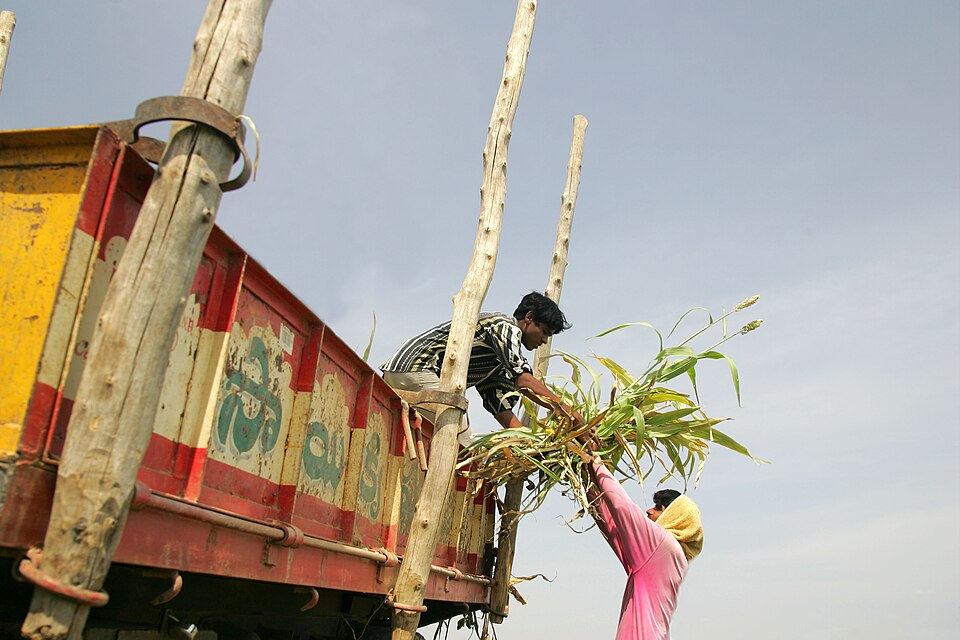

गौशाला की दैनिक गतिविधियाँ ગૌશાળાની દૈનિક પ્રવૃત્તિઓ Daily Gaushala Activities
दैनिक सेवा, देखभाल और व्यवस्था से जुड़ी जानकारी। દૈનિક સેવા, સંભાળ અને વ્યવસ્થા સંબંધિત માહિતી. Information related to daily service, care, and management.
प्रभाव एवं पारदर्शिता પ્રભાવ અને પારદર્શિતા Impact & Transparency
जय बाबा रामदेव गौसेवा समिति गौशाला रामदेवरा में हम मानते हैं कि सच्ची सेवा हमेशा पारदर्शिता और जिम्मेदारी के साथ की जानी चाहिए। જય બાબા રામદેવ ગૌસેવા સમિતિ ગૌશાળા રામદેવરામાં અમે માનીએ છીએ કે સાચી સેવા હંમેશા પારદર્શિતા અને જવાબદારી સાથે થવી જોઈએ. At Jai Baba Ramdev Gauseva Samiti Gaushala Ramdevra, we believe that true service should always be rendered with transparency and responsibility.
गौशाला में किया जाने वाला प्रत्येक प्रयास गौमाताओं को सुरक्षित आश्रय, भोजन, देखभाल और संरक्षण प्रदान करने के उद्देश्य से समर्पित है। साथ ही, हम समाज के साथ एक खुला और विश्वासपूर्ण संबंध बनाए रखने के लिए प्रतिबद्ध हैं। ગૌશાળામાં કરવામાં આવતો દરેક પ્રયાસ ગૌમાતાઓને સુરક્ષિત આશ્રય, ભોજન, સંભાળ અને સંરક્ષણ પૂરા પાડવાના ઉદ્દેશ્ય માટે સમર્પિત છે. સાથે જ, અમે સમાજ સાથે ખુલ્લો અને વિશ્વાસપૂર્ણ સંબંધ જાળવી રાખવા માટે પ્રતિબદ્ધ છીએ. Every effort in our Gaushala is dedicated to providing safe shelter, food, care, and protection to cows. We are also committed to maintaining an open and trusting relationship with society.

वास्तविक गतिविधियाँ, वास्तविक प्रभाव વાસ્તવિક પ્રવૃત્તિઓ, વાસ્તવિક પ્રભાવ Real Activities, Real Impact
पारदर्शिता हमारे कार्य का एक हिस्सा मात्र नहीं है, बल्कि यह हमारे प्रत्येक निर्णय और गतिविधि का आधार है। हम नियमित रूप से गौशाला की गतिविधियों और प्रगति की जानकारी समाज के साथ साझा करते हैं, ताकि प्रत्येक सहयोगी इस सेवा यात्रा से जुड़ा रह सके। પારદર્શિતા એ અમારા કાર્યનો માત્ર એક ભાગ નથી, પણ અમારા દરેક નિર્ણય અને પ્રવૃત્તિનો આધાર છે. અમે નિયમિતપણે ગૌશાળાની પ્રવૃત્તિઓ અને પ્રગતિની માહિતી સમાજ સાથે શેર કરીએ છીએ, જેથી દરેક સહયોગી આ સેવા યાત્રા સાથે જોડાયેલા રહી શકે. Transparency is not just a part of our work, but the foundation of our every decision and activity. We regularly share information about the Gaushala's activities and progress with the society, so that every supporter can stay connected to this service journey.
दैनिक सेवा, देखभाल और व्यवस्था से जुड़ी जानकारी। દૈનિક સેવા, સંભાળ અને વ્યવસ્થા સંબંધિત માહિતી. Information related to daily service, care, and management.
चारा, भोजन और जल व्यवस्था के नियमित अपडेट। ઘાસચારો, ભોજન અને પાણીની વ્યવસ્થાના નિયમિત અપડેટ્સ. Regular updates on fodder, food, and water arrangements.
स्वच्छता, निगरानी और दैनिक देखभाल की जानकारी। સ્વચ્છતા, મોનિટરિંગ અને દૈનિક સંભાળની માહિતી. Information on hygiene, monitoring, and daily care.
नई व्यवस्था और सुधार कार्यों की पारदर्शी झलक। નવી વ્યવસ્થા અને સુધારણા કાર્યોની પારદર્શક ઝલક. Transparent glimpse of new systems and improvement works.
सहयोगियों, स्वयंसेवकों और समाज की भागीदारी से जुड़ी जानकारी। સહયોગીઓ, સ્વયંસેવકો અને સમાજની ભાગીદારી સંબંધિત માહિતી. Information related to the involvement of supporters, volunteers, and the society.
सहभागिता से सशक्त होती है सेवा ભાગીદારીથી સેવા સશક્ત બને છે Service is Empowered by Participation
समाज का सहयोग हमें गौमाताओं के लिए बेहतर व्यवस्था और निरंतर सेवा प्रदान करने में सहायता करता है। आपकी सहभागिता आश्रय, भोजन, देखभाल और संरक्षण के प्रयासों को मजबूत बनाती है। સમાજનો સહયોગ અમને ગૌમાતાઓ માટે વધુ સારી વ્યવસ્થા અને સતત સેવા પ્રદાન કરવામાં મદદ કરે છે. તમારી ભાગીદારી આશ્રય, ભોજન, સંભાળ અને સંરક્ષણના પ્રયાસોને મજબૂત બનાવે છે. Community support helps us provide better facilities and continuous service for the cows. Your participation strengthens shelter, food, care, and conservation efforts.
गौमाताओं के लिए संरक्षित और सुरक्षित वातावरण। ગૌમાતાઓ માટે સુરક્ષિત અને સંરક્ષિત વાતાવરણ. A protected and safe environment for cows.
नियमित चारा और स्वच्छ जल की उपलब्धता। નિયમિત ઘાસચારો અને સ્વચ્છ પાણીની ઉપલબ્ધતા. Availability of regular fodder and clean water.
गौमाताओं की दैनिक आवश्यकताओं का ध्यान। ગૌમાતાઓની દૈનિક જરૂરિયાતોનું ધ્યાન. Attending to the daily needs of cows.
दीर्घकालिक सुरक्षा और कल्याण की व्यवस्था। લાંબા ગાળાની સુરક્ષા અને કલ્યાણની વ્યવસ્થા. Arrangements for long-term safety and welfare.


साथ मिलकर आगे बढ़ता एक मिशन સાથે મળીને આગળ વધતું એક મિશન A Mission Moving Forward Together
गौशाला की प्रगति और स्थिरता समाज के सहयोग से संभव होती है। प्रत्येक सहयोगी, स्वयंसेवक और शुभचिंतक इस मिशन का महत्वपूर्ण हिस्सा है। ગૌશાળાની પ્રગતિ અને સ્થિરતા સમાજના સહયોગથી શક્ય બને છે. દરેક સહયોગી, સ્વયંસેવક અને શુભચિંતક આ મિશનનો મહત્વનો ભાગ છે. The progress and sustainability of the Gaushala are made possible by community support. Every supporter, volunteer, and well-wisher is an important part of this mission.
सामूहिक प्रयासों के माध्यम से हम ऐसा वातावरण तैयार कर रहे हैं जहाँ सेवा और सहभागिता मिलकर सकारात्मक परिवर्तन का निर्माण करती हैं। સામૂહિક પ્રયાસો દ્વારા અમે એવું વાતાવરણ તૈયાર કરી રહ્યા છીએ જ્યાં સેવા અને સહભાગિતા મળીને સકારાત્મક પરિવર્તન લાવે છે. Through collective efforts, we are creating an environment where service and participation together build positive change.
सेवा की प्रत्येक गतिविधि से आपको जोड़ना સેવાની દરેક પ્રવૃત્તિ સાથે તમને જોડવા Connecting You to Every Activity of Service
हम मानते हैं कि जो लोग इस मिशन का हिस्सा हैं, उन्हें उसके प्रभाव को देखने का अवसर भी मिलना चाहिए। इसलिए हम नियमित रूप से गतिविधियों, कहानियों, चित्रों और सेवा कार्यों की जानकारी साझा करते हैं। हमारा उद्देश्य विश्वास, पारदर्शिता और जवाबदेही को मजबूत बनाना है। અમે માનીએ છીએ કે જે લોકો આ મિશનનો ભાગ છે, તેમને તેનો પ્રભાવ જોવાની તક પણ મળવી જોઈએ. તેથી અમે નિયમિતપણે પ્રવૃત્તિઓ, વાર્તાઓ, ચિત્રો અને સેવા કાર્યોની માહિતી શેર કરીએ છીએ. અમારો ઉદ્દેશ્ય વિશ્વાસ, પારદર્શિતા અને જવાબદારીને મજબૂત બનાવવાનો છે. We believe that those who are part of this mission should have the opportunity to see its impact. Therefore, we regularly share activities, stories, images, and service updates. Our goal is to strengthen trust, transparency, and accountability.
हर अपडेट समाज को इस सेवा यात्रा के करीब लाता है और सहयोगियों को दिखाता है कि उनका योगदान किस प्रकार उपयोगी बन रहा है। દરેક અપડેટ સમાજને આ સેવા યાત્રાની નજીક લાવે છે અને સહયોગીઓને દર્શાવે છે કે તેમનું યોગદાન કેવી રીતે ઉપયોગી થઈ રહ્યું છે. Every update brings the society closer to this service journey and shows supporters how their contribution is making a difference.
हम मानते हैं कि सेवा तभी सफल होती है जब उसमें विश्वास जुड़ा हो। इसलिए गौशाला की गतिविधियों, सेवा कार्यों और विकास योजनाओं की जानकारी समय-समय पर समाज के साथ साझा की जाती है, ताकि प्रत्येक सहयोगी अपने योगदान का सकारात्मक प्रभाव देख सके। અમે માનીએ છીએ કે સેવા ત્યારે જ સફળ થાય છે જ્યારે તેમાં વિશ્વાસ જોડાયેલો હોય. તેથી ગૌશાળાની પ્રવૃત્તિઓ, સેવા કાર્યો અને વિકાસ યોજનાઓની માહિતી સમયાંતરે સમાજ સાથે શેર કરવામાં આવે છે, જેથી દરેક સહયોગી પોતાના યોગદાનની સકારાત્મક અસર જોઈ શકે. We believe that service is only successful when trust is attached. Therefore, information about Gaushala's activities, service works, and development plans is shared with the society from time to time, so that every supporter can see the positive impact of their contribution.
गौसेवा केवल एक कार्य नहीं, बल्कि सामूहिक जिम्मेदारी है। हम प्रत्येक दान, सेवा गतिविधि और महत्वपूर्ण उपलब्धि को खुले रूप से साझा करते हैं, जिससे समाज और सहयोगियों के बीच विश्वास और सहभागिता लगातार मजबूत होती रहे। ગૌસેવા માત્ર એક કાર્ય નથી, પણ એક સામૂહિક જવાબદારી છે. અમે દરેક દાન, સેવા પ્રવૃત્તિ અને મહત્વપૂર્ણ સિદ્ધિને ખુલ્લા મને શેર કરીએ છીએ, જેનાથી સમાજ અને સહયોગીઓ વચ્ચે વિશ્વાસ અને ભાગીદારી સતત મજબૂત થતી રહે. Cow service is not just a job, but a collective responsibility. We openly share every donation, service activity, and key milestone, so that trust and participation between the society and supporters remain continuously strong.
जिम्मेदारी के साथ सेवा જવાબદારી સાથે સેવા Service with Responsibility
जैसे-जैसे हम अपने प्रयासों का विस्तार करते हैं, हमारी प्रतिबद्धता हमेशा एक समान रहती है। हमारा प्रत्येक कदम इन्हीं मूल्यों से प्रेरित है। જેમ જેમ અમે અમારા પ્રયાસોનો વિસ્તાર કરીએ છીએ, તેમ તેમ અમારી પ્રતિબદ્ધતા હંમેશા એક સમાન રહે છે. અમારું દરેક પગલું આ જ મૂલ્યોથી પ્રેરિત છે. As we expand our efforts, our commitment remains the same. Every step we take is guided by these values.
अंतिम आह्वान અંતિમ આહવાન Final Call
जब सेवा, विश्वास और सहभागिता एक साथ आते हैं, तब वास्तविक परिवर्तन संभव होता है। आइए, हम मिलकर गौमाताओं के लिए एक सुरक्षित, सम्मानजनक और देखभालपूर्ण वातावरण का निर्माण करें तथा जिम्मेदारी और करुणा की संस्कृति को आगे बढ़ाएं। જ્યારે સેવા, વિશ્વાસ અને ભાગીદારી એકસાથે આવે છે, ત્યારે જ વાસ્તવિક પરિવર્તન શક્ય બને છે. આવો, આપણે મળીને ગૌમાતાઓ માટે એક સુરક્ષિત, સન્માનજનક અને સંભાળભર્યા વાતાવરણનું નિર્માણ કરીએ અને જવાબદારી તથા કરુણાની સંસ્કૃતિને આગળ વધારીએ. When service, trust, and participation come together, real change becomes possible. Let us work together to build a safe, respectful, and caring environment for the cows, and promote a culture of responsibility and compassion.
सामूहिक जिम्मेदारी और सार्थक सेवा के माध्यम से सकारात्मक परिवर्तन की ओर एक कदम। સામૂહિક જવાબદારી અને સાર્થક સેવા દ્વારા સકારાત્મક પરિવર્તન તરફ એક પગલું. A step towards positive change through collective responsibility and meaningful service.